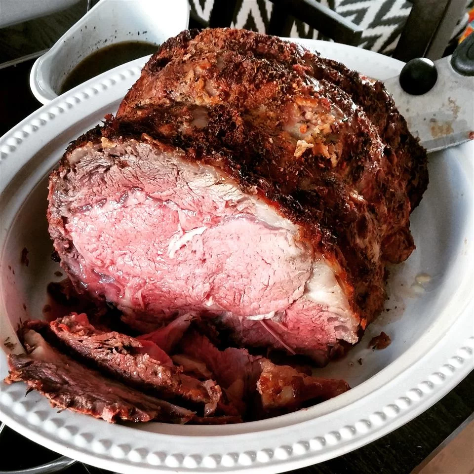

Prime Rib Recipe

Description
The only prime rib recipe you’ll ever need! Follow our step-by-step instructions for a prime rib roast that’s cooked to perfection. It’s a must for holidays and special gatherings!
Ingredients
- 1 (10 pound) standing rib roast, 3 to 7 ribs (estimate serving 2-3 people per rib), bones cut away from the roast and tied back to the roast with kitchen string (ask your butcher to prepare the roast this way)
- Salt
- Freshly ground black pepper
- 1/4 cup fat and drippings from the pan
- 1/4 cup all-purpose flour
- 3 to 4 cups water, milk, stock, or beer
- Salt to taste
- Freshly ground black pepper to taste
Steps
- Salt the roast and let sit at room temp
- Tie with kitchen string
- Preheat the oven and season the roast
- Place the roast fat-side-up in a roasting pan
- Brown the roast at high temperature
- Lower the oven to 325°F to finish roasting
- Let the roast rest
- Slice the roast
- Make the gravy